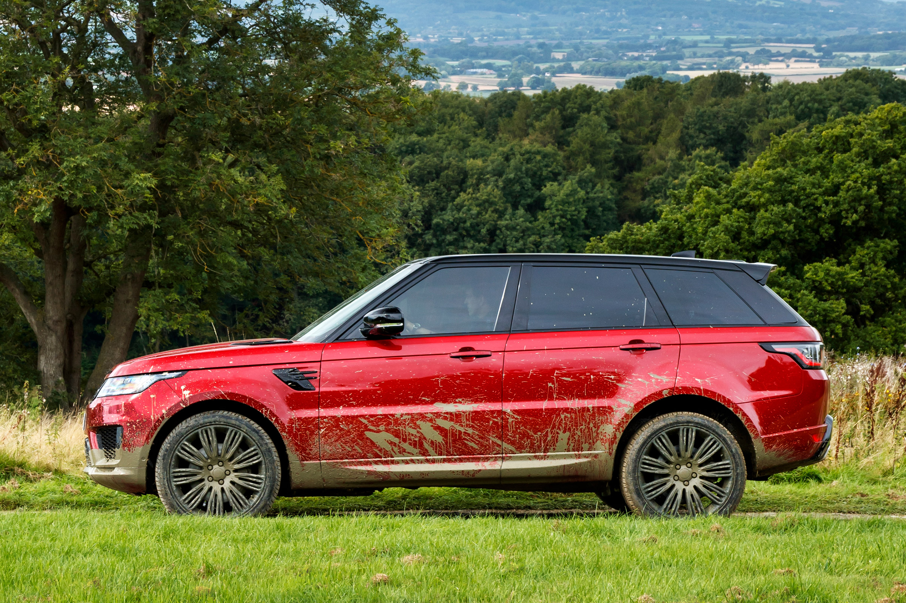

more images
| BMW M3 F80 | |
more images |
The BMW M3 is a high-performance version of the 3 Series, developed by BMW's in-house motorsport division, BMW M GmbH. M3 models have been derived from the subsequent generations of the BMW 3 Series. The initial model was available in a coupe body style. At times the M3 has also been available in saloon and convertible body styles. Due to the coupe and convertible models no longer being part of the 3 Series range from 2015,[1][2] the F82/F83 coupe and convertible models are now called the M4 based on the newly introduced 4 Series. The M3 name remains in use solely for the saloon version. Upgrades over the standard 3 Series automobiles include more powerful and responsive engines, improved handling/suspension/braking systems, aerodynamic body enhancements, lightweight components and interior/exterior accents with the tri-colour "M" (Motorsport) emblem. |
| Land Rover Range Rover Sport | |
|  more images |
The Land Rover Range Rover Sport is a British luxury mid-size SUV made by Land Rover. The first generation (codename: L320) started production in 2004, and was replaced by the second generation Sport (codename: L494) in 2013. The Range Rover Sport was prefigured by the Range Stormer concept car, introduced at the 2004 North American International Auto Show. This was a low-slung, short wheelbase 3-door coupè that was unusually "sporty" in the context of Land Rover's history.[1] Designed by Richard Woolley, the marque's first complete concept car sported split-folding gullwing doors, one-piece skeletal seats, a "clamshell" hood, 22 inch alloys, a 289 km/h top speed, 4WD and a 2500 kg weight. The Range Rover Sport was comparably of much more conservative design featuring five doors and a wheelbase hardly shorter than that of the Range Rover Vogue. A replica of the Stormer was built by West Coast Customs of Corona, CA for Sheikh Hamdan bin Mohammed Al Maktoum, Crown Prince of Dubai, on the occasion of opening West Coast Customs Dubai; the car is currently registered under the Dubai Traffic And Road Authority. |